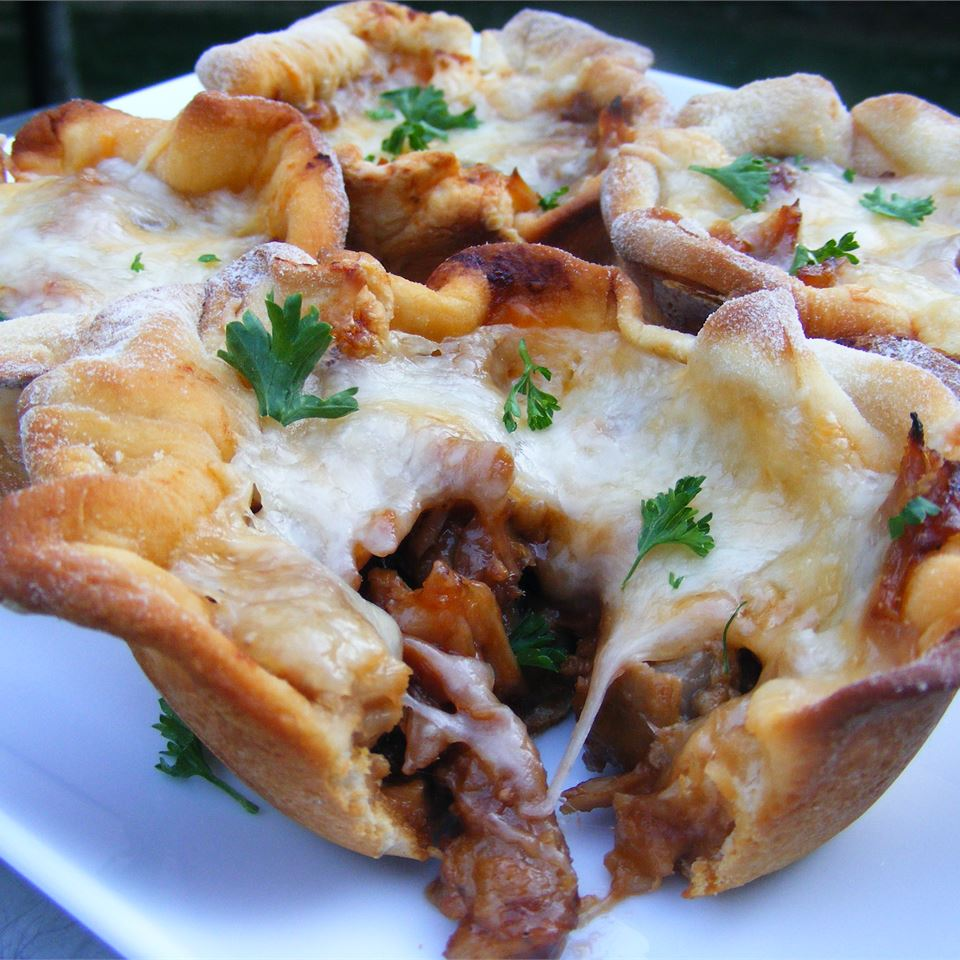

Uglies

Description
They aren't pretty or healthy, but they are tasty! Uglies make for a great treat and even a good side dish. You will probably want them again after trying them once, so, tread carefully.
Ingredients
- 1 pound ground beef
- 1/2 cup chopped onion
- 1/2 teaspoon garlic powder
- 1 1/2 cups barbeque sauce
- 1 (10 ounce) package refrigrated biscuit dough
- 2 cups shredded cheddar cheese
Steps
- Preheat oven to 400 degrees F (200 C) and lightly grease 8 muffin cups.
- Cook ground beef with onion and garlic powder until brown. Drain grease and stir in barbeque sauce for a few minutes.
- Roll out biscuits. Place rolled biscuits in muffin tin and mold them into a cup shape.
- Fill your 'biscups' with the meat mixture and top with cheddar cheese.
- Bake in oven until 'biscups' are baked, cheese is melted, and tops are golden brown (about 15 minutes).